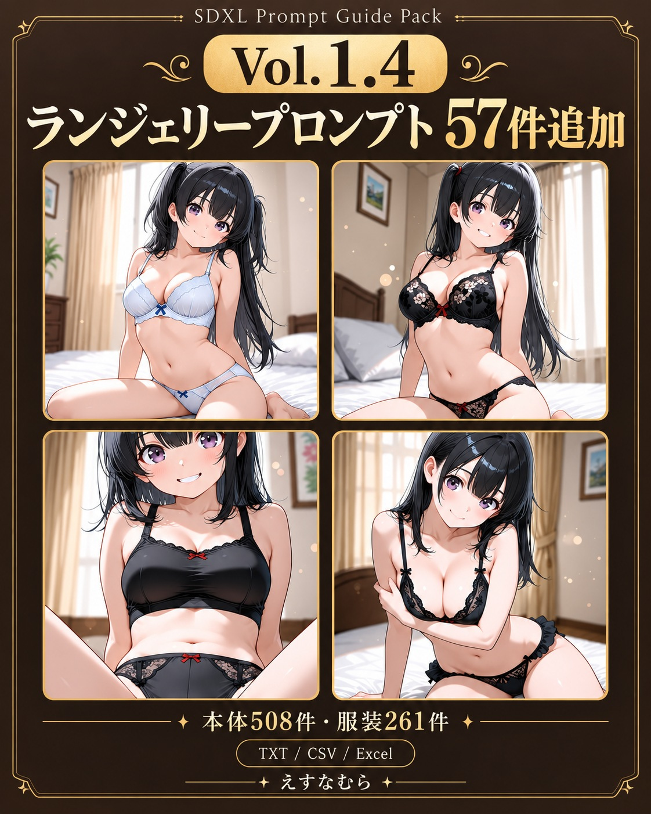
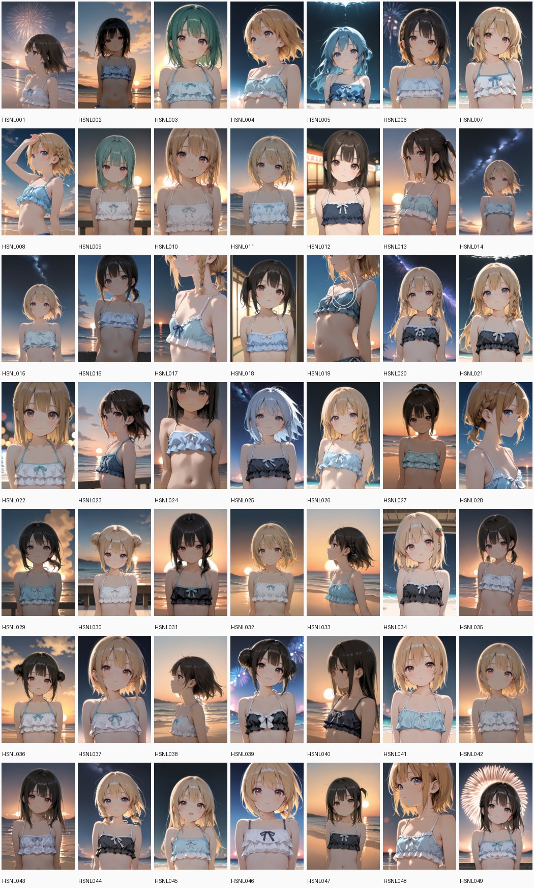
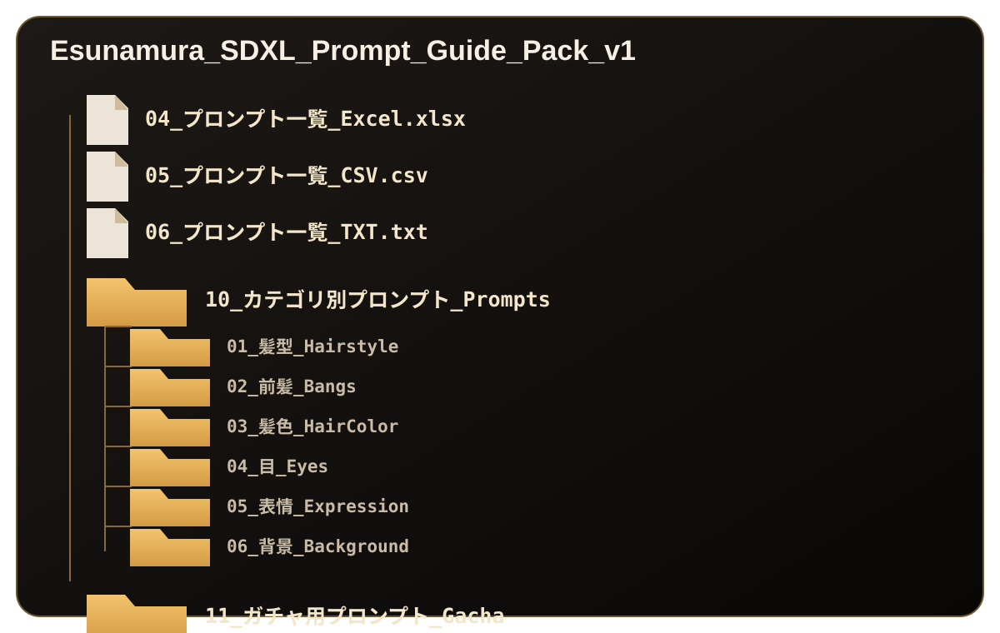

収録カテゴリ
髪型
前髪
髪色
目
表情
背景（京都風・和風）
服装
自然文髪型
えすなむら
AI CG / Illustration Collection
Research Download Pack / SDXL
研究室プロンプト一括ダウンロード版
えすなむら研究室で公開しているSDXL / illustriousXL系向けのプロンプト検証ログを、制作時に使いやすい TXT / CSV / サムネイル付きExcel形式で整理した一括ダウンロード版です。Vol.1.4では、明確なポジティブと必要最小限のネガティブで構成したランジェリープロンプト57件を追加しました。
HP上でも内容は確認できますが、ページを行き来せずにまとめて検索・コピー・管理したい方向けの時短パックです。
Pack Contents
髪型・前髪・髪色・目・表情・背景・服装・自然文髪型を、制作時に探しやすい形でまとめています。Vol.1.4では服装にランジェリー57件を追加し、全形式を同期しました。
Vol.1.4 Update
掲載用に選定した57種類を、形・素材・配色・サポート構造ごとに整理しました。ポジティブは表現対象を明確にし、ネガティブは透けや裸化を避けるための必要最小限に絞っています。
Outfit
ランジェリー、パジャマ・ルームウェア、和装・浴衣、水着・リゾート、私服・カジュアル、ワンピースを収録しています。
Folder
カテゴリ別TXT、ガチャ用TXT、CSV、サムネイル付きExcel、サンプル画像のすべてにランジェリー57件を反映しています。
Use Case
同じキャラクターで服装だけ変えたい時に、コピーして試しやすい英文プロンプトとして使えます。
Preview
Vol.1.4の販売ページ用サムネイルと、収録ファイルの見え方を確認できます。

本体508件・服装261件をまとめた一括ダウンロード版です。

英文の自然文指定で、髪型・前髪・髪色の見え方を変える追加検証を収録。

画像を見ながらプロンプトを検索・確認できます。

カテゴリ別TXT、CSV、Excel、ガチャ用TXT、サンプル画像を収録。

POSITIVE / NEGATIVE PROMPTをテーマごとに確認できます。

複数テーマをざっくり試したい時に使えます。
Price
現在は公開記念価格として500円で公開しています。今後の収録内容の追加・更新に合わせて、価格を変更する場合があります。
Update Policy
Vol.1.4ではランジェリー57件を追加し、本体508件・服装261件へ更新しました。販売ファイルとホームページの内容を揃え、TXT・CSV・Excel・カテゴリ別TXT・ガチャ用TXT・サンプル画像を同期しています。一度購入いただいた方は、同じ販売ページから更新版を再ダウンロードできます。※永久更新保証ではありません。
Notes
Download Pack
Vol.1.4は本体508件・自然文髪型49件を、TXT / CSV / サムネイル付きExcel・カテゴリ別TXT・ガチャ用TXT・サンプル画像でまとめた一括ダウンロード版です。現在は500円で用意しています。
ここから探す